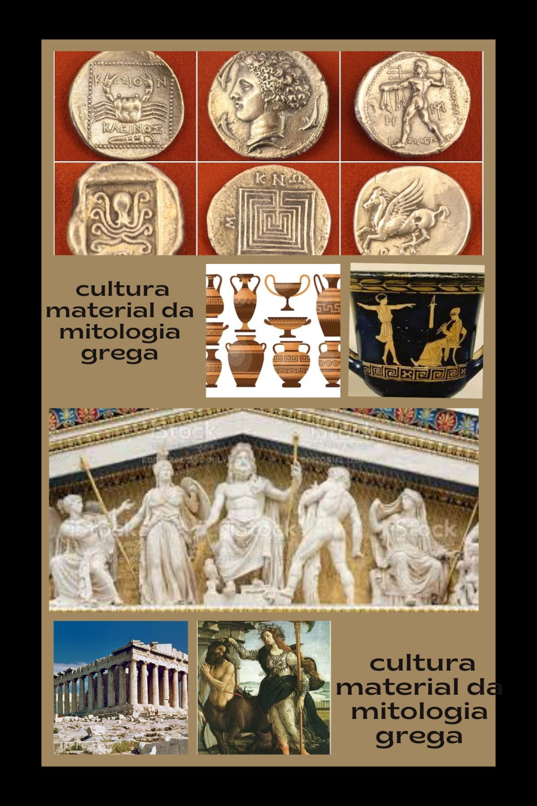

Introdução
Mitologia grega é um conjunto de histórias (lendas e mitos) inventadas pela civilização da Grécia Antiga. A maioria desses mitos narra uma história épica, a qual conta com seres sobrenaturais, deuses e semideuses, que coexistem no mundo com os seres humanos. De modo geral, essas lendas foram o meio encontrado pelos gregos de explicarem fenômenos naturais.
Acredita-se que a mitologia grega tenha surgido por volta do século VIII a.C., sendo baseada principalmente no relato de histórias fantásticas descritas em uma série de narrativas registradas principalmente por Hesíodo e Homero (poetas gregos).
Eles foram necessários para compreender o mundo e o papel do homem nele, não apenas entre os gregos, mas em praticamente todas as culturas. Através das narrativas míticas também entende-se vários acontecimentos menores na vida cotidiana, nos quais recebe-se a ajuda ou o agouro de algum deus.
Cultura Material
A cultura material da mitologia grega se refere aos artefatos físicos, objetos e representações tangíveis que estão relacionados à mitologia e crenças dos antigos gregos. A mitologia grega é rica em histórias sobre deuses, heróis, monstros e eventos mitológicos que têm sido representados em várias formas de arte e objetos do cotidiano. Aqui estão alguns exemplos de como a mitologia grega influenciou a cultura material:
Esculturas e Estátuas: A mitologia grega é repleta de deuses e heróis, muitos dos quais foram representados em esculturas e estátuas. Um exemplo icônico é a estátua de Zeus em Olímpia, uma das Sete Maravilhas do Mundo Antigo. Outras estátuas notáveis incluem a estátua de Atena Partenos no Partenon e a estátua de Apolo no Templo de Apolo em Delfos.
Vasos e Cerâmicas: A mitologia grega também é frequentemente retratada em vasos e cerâmicas, que eram usados para armazenar alimentos, líquidos e outros itens. As cenas mitológicas eram frequentemente pintadas nessas peças, mostrando batalhas de deuses, casamentos divinos e outros eventos mitológicos.
Moedas: Muitas cidades-estado gregas cunharam moedas que apresentavam imagens de deuses e símbolos mitológicos. Essas moedas eram uma forma de expressar a identidade cultural e religiosa das cidades.
Arquitetura e Templos: A arquitetura grega muitas vezes incorporava elementos mitológicos. Templos dedicados a deuses específicos, como o Templo de Hera em Olímpia ou o Templo de Poseidon em Cabo Sunião, eram construídos como locais de culto e também como expressões visuais da importância dos deuses na vida cotidiana.
Jóias e Adornos: Mitos gregos também influenciaram a joalheria e os adornos. Por exemplo, as joias frequentemente apresentavam amuletos ou símbolos associados a deuses específicos, como a coruja de Atena.
Arte Pictórica: A mitologia grega foi representada em pinturas murais, mosaicos e outros tipos de arte pictórica. Cenas mitológicas eram frequentemente usadas para decorar edifícios públicos e privados.
Literatura e Manuscritos Ilustrados: Textos literários antigos que narravam as histórias da mitologia grega muitas vezes eram acompanhados por ilustrações, quando possível. Ilustrações em manuscritos medievais, por exemplo, continuaram a representar as histórias mitológicas da Grécia antiga.
A mitologia grega desempenhou um papel fundamental na formação da cultura material dos antigos gregos e continuou a influenciar a arte, a arquitetura e a expressão visual em diferentes períodos históricos e regiões ao longo dos séculos. Suas histórias e personagens perduram como fonte de inspiração para artistas e criativos até os dias atuais.

Cultura Imaterial
Cronos
Cronos casou com a sua irmã Reia, que lhe deu seis filhos (os crónidas): três mulheres, Héstia, Deméter e Hera e três homens, Hades, Posídon e Zeus.
Como tinha medo de ser destronado por causa de uma maldição de um oráculo, Cronos engolia os filhos ao nascerem. Comeu todos, exceto Zeus, que Reia conseguiu salvar enganando Cronos ao enrolar uma pedra (a pedra de onfalo) em um pano, a qual ele engoliu sem perceber a troca.
Quando Zeus cresceu, resolveu vingar-se de seu pai, solicitando, para esse feito, o apoio de Métis — a Prudência — filha do titã Oceano. Esta ofereceu a Cronos uma poção mágica que o fez vomitar os filhos que tinha devorado. Seguiu-se, então, a titanomaquia, uma luta entre Zeus, seus irmãos e irmãs, hecatônquiros e ciclopes de um lado, e Cronos e os demais titãs de outro.

Reia
Irmã e esposa de Cronos, gerou nesta ordem, Hera (a mais velha), seguida de Deméter e Héstia, seguidas de Hades e Posídon; o próximo a nascer, Zeus, foi escondido por Reia em Creta, que deu uma pedra para Cronos comer.

Zeus
Zeus era um importante deus da religiosidade dos gregos, considerado o comandante do Universo e aquele que regia e supervisionava os seres humanos e os deuses. Era filho do titã Cronos e tornou-se comandante do Universo após libertar seus irmãos do estômago de seu pai e derrotá-lo em uma batalha. Era conhecido como deus do céu, do raio e do trovão. Os Jogos Olímpicos eram uma forma de cultuá-lo.
Zeus era conhecido como o deus do céu, do raio e do trovão.
Podia controlar o clima e usá-lo para ajudar ou prejudicar os humanos.
Era filho de Cronos e Reia.
Resgatou seus irmãos, devorados pelo pai, Cronos, e guerreou contra os titãs.
Era casado com Hera, mas tinha vários casos extraconjugais.
Os gregos lhe prestavam cultos, dentre eles, os Jogos Olímpicos.

Poseidon
Poseidon era um dos mais importantes deuses presentes na religiosidade dos gregos antigos. Os gregos o consideravam o deus dos mares e dos rios e responsável por terremotos, enchentes e tempestades. Era o patrono dos marinheiros e dos cavalos e o criador desses animais na mitologia.
Os historiadores afirmam que, durante o período Pré-Homérico, o culto a Poseidon já era consolidado em diversas partes da Grécia. Na mitologia, Poseidon era filho de Cronos e Reia e irmão de Zeus. Tornou-se o senhor das águas depois que os deuses gregos derrotaram os titãs e os gigantes em duas guerras.
Poseidon era o deus grego dos mares e dos rios.
Era considerado o patrono dos marinheiros e dos cavalos.
Os gregos atribuíam as enchentes, os terremotos e as tempestades a esse deus.
Era irmão de Zeus e foi resgatado por ele de dentro do ventre do pai de ambos, Cronos.
Disputou com Atena o direito de ser o patrono de Atenas, mas os atenienses preferiram a deusa.

Hades
Hades foi um dos deuses que faziam parte da religiosidade grega e romana e um dos mais temidos, pois era o guardião do submundo. Era irmão de Zeus, e tomou parte na luta contra o titã Cronos, seu próprio pai. Era casado com Perséfone, uma deusa que fora sequestrada por ele quando colhia flores no campo.

Hera
Hera conhecida por ser a representante divina das mulheres, do casamento, da família e dos nascimentos. Foi a rainha dos deuses por ser casada com Zeus, o deus supremo do panteão grego, e extremamente ciumenta por conta dos casos extraconjugais de seu marido.Foi vingativa e puniu todos os que a prejudicaram.
Seu principal templo foi o Heraião, localizado na ilha de Samos.

Atena
Atena era considerada a deusa da sabedoria, mas também tinha forte relação com ofícios e habilidades manuais. Era a deusa patrona de uma das cidades mais importantes da Grécia: Atenas. Era filha de Zeus e nasceu ao sair da cabeça de seu pai.
Essa divindade era considerada pelos gregos como guerreira, descrita como uma deusa que usava armaduras e empunhava um escudo e uma lança. Fez parte da Guerra de Troia e não aceitava que mortais a desrespeitassem. Em homenagem a Atena, uma estátua de 12 metros foi construída e mantida no templo chamado Parthenon, localizado em Atenas.Ficou marcada por ajudar Perseu a matar a górgona Medusa, que possuía feição horrenda por ter sido punida pela deusa.
Ela era filha de Zeus e nasceu da cabeça de seu pai.
Era a deusa patrona de Atenas, embora tivesse grande importância para outras cidades gregas.
Uma estátua sua foi construída em Atenas, no interior do Parthenon, um dos templos erigidos em sua homenagem.

Afrodite
Na mitologia grega, Afrodite é a deusa do amor, da beleza e da sexualidade.
Ela foi considerada a personificação do ideal de beleza dos gregos na Antiguidade. E, na Idade Moderna serviu de inspiração para diversos artistas do Renascimento.
Na Grécia antiga, sobretudo nas cidades de Esparta, Atenas e Corinto, ela foi cultuada e associada aos prazeres carnais. Por isso, era também considerada a protetora das prostitutas e daí surge o termo “afrodisíaco”.
Os deuses gregos faziam parte da espiritualidade do povo os quais eram reverenciados e cultuados com ritos, festas e oferendas. Na mitologia romana, Afrodite é correspondente à deusa Vênus.
Afrodite era filha de Zeus, o deus dos deuses e dos homens, e Dione, deusa das ninfas.
Ela nasceu na Ilha de Creta com uma beleza estonteante, sendo muito vaidosa, sedutora, charmosa e vingativa.
Reza a lenda que ela já nasceu adulta no mar e por isso, o nome “Afrodite” significa “nascida da espuma”.
Suas principais rivais foram:
Deusa Hera: deusa dos céus, da maternidade e do matrimônio, e uma das mulheres de Zeus;
Deusa Atena: deusa da sabedoria e filha predileta de Zeus;
Deusa Perséfone: deusa das ervas, flores, frutos e perfumes, e também filha de Zeus.
Com um casamento arranjado pelo pai, ela casou-se com Hefesto, deus do fogo, no entanto, não tiveram nenhum filho. Para Afrodite, que primava pela beleza e o amor, ele era feio e destituído de senso de humor.
Diante disso, ela seduziu diversos homens, tendo muitos amantes, e dessas uniões nasceram diversos filhos.
Afrodite se apaixonou por Ares, deus da guerra, e com ele teve os filhos:
Eros: deus do amor;
Anteros: deus do amor não-correspondido;
Deimos: deus do terror;
Fobos: deus do medo;
Harmonia: deusa da harmonia;
Himeros: deus do desejo sexual;
Pothos: deus da paixão.

Héstia
Héstia era uma deusa presente no panteão grego, representante da lareira, do lar, da vida doméstica e da hospitalidade. Ela tinha uma forte relação com a vida doméstica e com a lareira, o seu grande símbolo. Assim, todo lar grego possuía uma pequena lareira que ficava acessa em referência a ela.
Além disso, em espaços públicos da Grécia Antiga, havia lareiras que ficavam acesas permanentemente em honra a Héstia, e alguns eventos públicos eram marcados por homenagens e oferendas feitas primeiramente a essa deusa. Apesar dessa importância, Héstia é pouco mencionada nos mitos gregos.
Era a filha mais velha de Cronos e Reia, portanto, irmã de Zeus.
Ficou conhecida por ter escolhido permanecer virgem.

Ártemis
Ártemis era conhecida como deusa da caça, da natureza e da castidade, além de ser protetora das mulheres, das crianças e dos nascimentos. Era venerada em diferentes partes da Grécia Antiga, havendo culto para ela em templos e festivais. O Templo de Ártemis em Éfeso era uma das Sete Maravilhas do Mundo Antigo.
Era filha de Leto e Zeus e também era irmã gêmea de Apolo.
O arco e flecha eram seus grandes símbolos.

Apolo
Apolo foi um dos deuses mais venerados pelos gregos antigos, e também esteve presente na religião romana com o nome de Febo. Era filho de Zeus e Leto e irmão gêmeo de Ártemis, sendo conhecido também como o deus do Sol, da música, das artes, da poesia, entre outros. Tinha no arco e flecha e na lira seus grandes símbolos.

Deméter
Deméter era cultuada como a deusa da agricultura, sendo a responsável pelo crescimento dos grãos plantados e pela fertilidade na Terra. Era filha de Cronos e Reia e era irmã de Zeus, o deus mais poderoso da religiosidade grega.
Deméter era bastante cultuada pelos gregos, que realizavam em sua homenagem um dos festivais religiosos mais renomados da época: Mistérios de Elêusis, realizado em Elêusis. Sua menção mitológica mais conhecida faz referência ao rapto de sua filha Perséfone por Hades, deus do submundo. A tristeza tomou conta de Deméter de tal forma que começou a faltar alimento na terra.

Dioniso
Dioniso reconhecido como o deus do vinho, das festas, da alegria, do teatro. Era filho de Zeus com uma mortal, sendo transformado em deus por Hera em gratidão por ele a ter libertado. O culto a ele era popular na Grécia, e os rituais eram marcados por festas regadas a vinho.
Era filho de Zeus e de uma mortal chamada Sêmele.
Foi o único semideus a ser transformado em deus na mitologia grega.

Ares
Ares era considerado o deus da guerra e entendido como a personificação da violência e da matança. Ares não era um deus muito popular entre os gregos antigos, que temiam sua personalidade, principalmente por ele ser considerado irritadiço.
Os historiadores afirmam que existem indícios de que Ares já era adorado desde o período dos micênicos, mas os gregos consideravam Ares um deus estrangeiro, nascido na Trácia. Era filho de Zeus e Hera e é pouco mencionado nos mitos gregos, mas suas aparições são sempre marcadas por alguma humilhação que Ares sofreu.
Ares era principalmente adorado em Esparta, cidade que tinha uma estátua em sua homenagem.
Ares teve um caso amoroso com Afrodite, com quem passou por uma grande humilhação.
Era filho de Zeus e Hera, e seu próprio pai não gostava dele.

Hermes
Hermes era tido como deus do comércio, da riqueza, da sorte, da fertilidade, dos ladrões, da viagem, dos rebanhos, entre outros. Era bastante conhecido por suas capacidades furtivas, e existem várias menções a seus furtos na mitologia.
Constam menções a Hermes em inscrições do período Pré-Homérico em cidades micênicas, e especula-se que ele pode ter surgido na região da Arcádia. Era o mensageiro do Monte Olimpo e, por isso, estava envolvido em vários mitos. Além disso, guiava os mortos até o submundo.

Hefesto
Hefesto era o deus da metalurgia, dos artesãos, do fogo, dos vulcões, entre outros. Era visto como um deus bastante habilidoso e o responsável pela produção de diversos objetos de valor mitológicos, como o escudo de Zeus e o elmo de Hades.
Era filho de Hera, deusa que o gerou em partenogênese, isto é, sem que fosse necessário um parceiro para isso. No entanto, sua aparência era tão grotesca que a própria mãe o teria lançado do alto do Monte Olimpo. Hefesto era um deus respeitado, e o centro de seu culto ficava em Lemnos, embora Atenas sediasse importantes festivais em sua homenagem.
Casou-se com Afrodite, deusa da beleza, mas foi constantemente traído por ela.

Hércules
Hércules é um personagem muito conhecido da mitologia grega (na qual é chamado de Herácles). Foi um herói e um semideus, pois era filho de uma mortal chamada Alcmena e de Zeus, o principal deus dos gregos. Ficou conhecido por sua grande força física.
Ao longo de sua vida, ele foi bastante perseguido por Hera, esposa de Zeus, que sentia ciúmes do caso de seu marido com Alcmena. Hércules cometeu inúmeras façanhas, e a principal delas foram os 12 trabalhos, missões de grande dificuldade que ele realizou a mando de seu primo Euristeu.
Hércules é o nome desse herói dado pelos romanos, enquanto os gregos o chamavam de Herácles.
Foi perseguido por Hera, e, em um acesso de loucura, causado pela deusa, matou sua primeira família.
Daí foram listados os 12 trabalhos de Hércules:
1.matar o Leão de Nemeia;
2.matar a Hidra de Lerna;
3.capturar a corça de Cerineia;
4.capturar o javali de Erimanto;
5.limpar os estábulos de Aúgias;
6.matar as aves do lago Estínfalo;
7.matar o touro de Creta;
8.capturar os cavalos de Diomedes;
9.roubar o cinturão de Hipólita, a rainha das Amazonas;
10.capturar o gado de Gerião;
11.capturar os pomos de ouro do Jardim das Hespérides;
12.capturar o cão de Hades, Cérbero.

Perseu
Perseu era um filho de uma mortal, Danae, e do grande deus Zeus, rei do Olimpo. O pai de Danae, o rei Acrísio, havia sido informado por um oráculo de que um dia seria morto por seu neto e, aterrorizado, aprisionou a filha e afastou todos os seus pretendentes. Mas Zeus era deus e desejava Danae: entrou na prisão disfarçado em chuva de ouro, e o resultado dessa união foi Perseu. Ao descobrir que, apesar de suas precauções, tinha um neto, Acrísio fechou Danae e o bebê numa arca de madeira e os lançou ao mar, na esperança de que se afogassem.
Mas Zeus enviou ventos favoráveis, que sopraram mãe e filho pelo mar e os levaram suavemente à costa. A arca parou numa ilha, onde foi encontrada por um pescador. O rei que comandava a ilha recolheu Danae e Perseu e lhes deu abrigo. Perseu cresceu forte e corajoso e, quando sua mãe se afligiu com as indesejadas investidas amorosas do rei, o jovem aceitou o desafio que este lhe fez: o de lhe levar a cabeça da Medusa, uma das Górgonas. Perseu aceitou essa missão perigosa não porque ambicionasse alguma glória pessoal, mas porque amava a mãe e estava disposto a arriscar a vida para protegê-la.
A Górgona Medusa era tão hedionda que quem olhasse seu rosto transformava-se em pedra. Perseu precisaria da ajuda dos deuses para vencê-la e Zeus, seu pai, certificou-se de que essa assistência lhe fosse oferecida: Hades, o rei do mundo subterrâneo, emprestou-lhe um capacete que tornava invisível quem o usasse; Hermes, o mensageiro divino, deu-lhe sandálias aladas; e Atena lhe deu uma espada e um escudo. Perseu pôde fitar o reflexo da Medusa e, assim, decepou-lhe a cabeça, sem olhar diretamente para seu rosto medonho.
Com a cabeça monstruosa seguramente escondida num saco, o herói voltou para casa. Na viagem, avistou uma bela donzela acorrentada a um rochedo à beira-mar, à espera da morte pelas mãos de um assustador monstro marinho. Perseu soube que ela se chamava Andrômeda e estava sendo sacrificada ao monstro porque sua mãe havia ofendido os deuses. Comovido por sua aflição e beleza, o herói apaixonou-se por ela e a libertou, transformando o monstro marinho em pedra com a cabeça de Medusa. Em seguida levou Andrômeda para conhecer sua mãe, que, na ausência dele, tinha sido tão atormentada pelas investidas do rei depravado que, desesperada, tinha ido se refugiar no templo de Atena.
Mais uma vez Perseu ergueu bem alto a cabeça da Medusa e transformou em pedra os inimigos da mãe. Depois, entregou a cabeça a Atena, que a incrustou em seu escudo, onde ela se tornou o emblema da deusa para sempre. Perseu também devolveu os outros presentes aos deuses que os haviam oferecido. Daí em diante, ele e Andrômeda viveram em paz e harmonia e tiveram muitos filhos.

Teseu
Teseu, filho de Egeu e Etra, é considerado um dos maiores heróis da mitologia grega. Sua grande importância está relacionada com sua força, valentia e com a morte do Minotauro. Na língua grega, seu nome significa “ homem forte”.
Já na adolescência ele levantou uma imensa pedra e todos ficam impressionados com sua força.
Nesse evento, ele pode conhecer a identidade de seu pai, que até então era desconhecida por ele. Nessa altura, seu pai, Egeu, era Rei de Atenas. Após a revelação ele segue para Atenas, ao encontro de seu pai.
Reza a lenda que seu pai se deitou com Etra e lhe pediu para que se ela tivesse um filho, que revelasse sua identidade somente se ele conseguisse levantar essa imensa pedra.
Curioso notar que embaixo da imensa rocha havia a espada e as sandálias de seu pai. Portanto, quando chegou em Atenas, seu pai o identificou uma vez que trazia seus pertences com ele.
Nesse momento, Egeu estava casado com Medeia, uma poderosa feiticeira. Ela tentou impedir o encontro entre pai e filho pedindo para que Egeu envenenasse o garoto.
No entanto, Egeu encontra Teseu com sua espada e sandálias e Medeia acaba fugindo ao temer o castigo que o rei poderia lhe causar.
Teseu ficou conhecido como um dos grandes heróis atenienses posto que foi ele quem libertou o povo grego da desgraça do Minotauro.
O Minotauro era um mostro com corpo de homem e cabeça de touro e, por isso, é também chamado de “Touro de Minos”.
Antes de matar o Minotauro no labirinto de Creta, muitos gregos já haviam morrido tentando matar o temido monstro.

Minotauro
Minotauro é uma conhecida criatura da mitologia grega marcada por sua ferocidade e por se alimentar de seres humanos. É caracterizado por ter corpo humano, mas o rosto e o rabo de um touro. Nasceu como fruto de uma relação de Pasífae, esposa de Minos, rei de Creta, com um touro.
Minotauro foi aprisionado em um labirinto como forma de conter sua ferocidade, sendo alimentado por oferendas de jovens enviados para Creta como sacrifício a ele. Foi morto pelo herói ateniense Teseu. Esse herói contou com ajuda de Ariadne, filha de Minos, e os mitos narram diferentes formas pelas quais a morte do Minotauro aconteceu.

Rei Midas
O rei Midas é um personagem da mitologia grega que é conhecido por dois mitos em que ele passou por maus momentos. Ele era rei da Frígia e foi agraciado por Dioniso com a realização de um pedido por ter cuidado e tratado bem Sileno, seguidor e companheiro desse deus. Ele pediu para que tudo que tocasse fosse transformado em ouro, mas logo arrependeu-se do pedido, pois isso se tornou uma maldição para ele.
Dioniso auxiliou Midas a se livrar dessa maldição, e tempos depois Midas envolveu-se em outro problema. Ele não aceitou a vitória de Apolo em uma competição musical que esse deus travou com Pã, deus que Midas seguia. Por isso, foi punido por Apolo e viu duas orelhas de burro crescerem em sua cabeça.